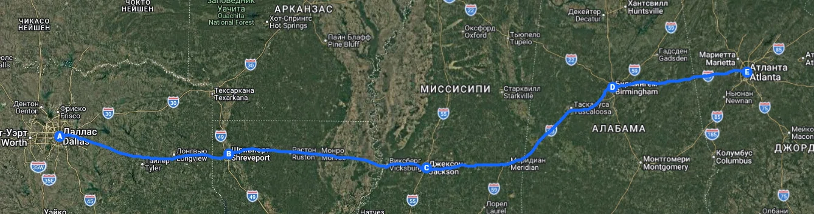
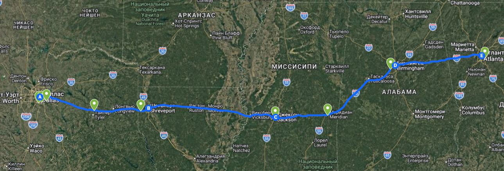
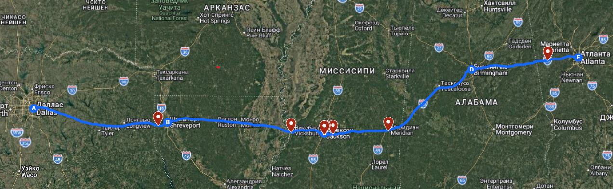
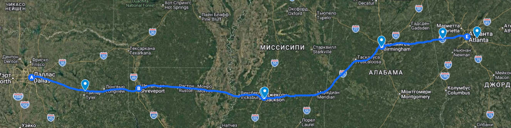
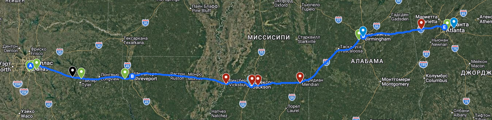

Основной маршрут проходит по федеральной трассе I-20 East — это единственный логичный путь из Техаса в Джорджию через 5 штатов.
Маршрут пересекает ключевые города: Shreveport, Jackson, Birmingham.

Для 780-мильного маршрута нужно 6–8 fuel stops, распределённых по всем штатам — с запасом на случай переполненных стоянок или изменений графика.
Каждая точка расположена прямо у выхода с I-20 — не нужно съезжать далеко от маршрута.

Weigh Station — это пункт контроля веса. Траки обязаны заезжать, если горит знак OPEN или у водителя нет PrePass.
В плане перевозки нужно учитывать возможные задержки на весовых станциях.

Для 780-мильного маршрута водителю нужна 1 ночёвка для соблюдения Hours of Service (HOS). Стоянки должны быть по всему маршруту.
Важно: Parking — это не Fuel Stop. Хотя часто они рядом, но это разные точки в плане перевозки.

Все слои вместе: маршрут, fuel stops, weigh stations и parking. Чёрная метка — это трасса I-20 East (основной маршрут, бесплатный).
Такой план позволяет рассчитать ETA с учётом всех остановок и избежать штрафов за нарушение режима труда и отдыха.